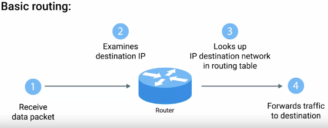
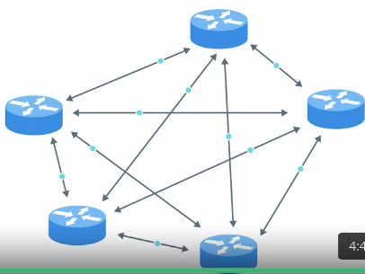
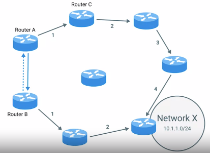

Index
ROUTING
Router : Forwards traffic depending on the destination address
Routing protocols: communication btwn routers
1.Interior Gateway Protocols : Used by routers to share info within a single network operator
• Link state routing protocols

• Distance-vector protocols

Exterior Gateway Protocols : Used to communicate data between routers representing edges of a network/.
IANA -> IP , ASN(AUtonomous System NUmber) allocations
Non-routable addresses : Ranges of ips set aside which will not be forwarded by co-routers. Hence every one can use it for their internal networks.
10.0.0.0/8
172.16.0.0/12
192.168.0.0/16